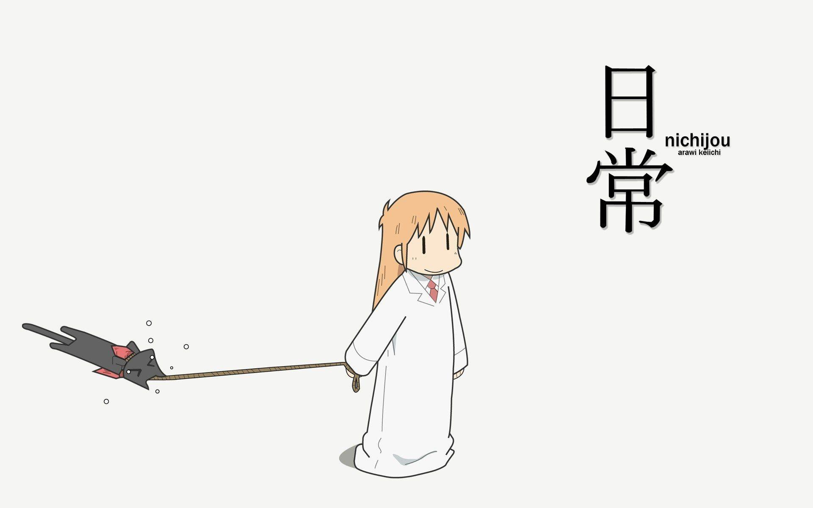

日常#0
新系列、iOS26、RSS、睡眠、红烧鸡翅、读者来信
{kind=link}

新开了一个系列，叫做「日常」，用来记录一些平日里的经历和想法，在 Zine#41 里我提到计划移除里面的「琐碎二三事」，那些碎碎念就由这个系列承载啦。
为什么叫「日常」呢，因为我很喜欢 日常 和 小城日常 CITY 这两部番，尽管描述的都是一些日常生活中的事，但动画让这些日常变得很有趣，搞笑又欢乐，也有感动，我希望也能向动画里这般去看待自己的日常，所以就取了这个名字。
最近看到 CITY 的第 5 集，画面太有想象力了，同一个画面中，描绘了好几个分镜，每个分镜里的人都在各自进行着自己的事，太牛了。片尾的动画也很有趣。推荐一看！
写这类日常博客的人我也看到几个，也挺有趣：
- 素生 作者一直记录着他在四川的生活，基本每天都有更新，佩服。
- So!azy 作者主要写「周末流水账」，记录周末的事情，总是有不少吃的东西；此外他也会更新一些自己的思考，我挺喜欢他的文风。
- 运维咖啡吧 作者目前在开着房车旅游，每天更新自己的游记，也挺有趣。
我不知道这个系列写起来会如何，能坚持多久，反正先试试看。
如果你只想订阅博客的「日常」系列的话，可以订阅 nichijou.xml。
又折腾了一下博客，见 结合 denote 和 org-publish 写博客，折腾完我自己用起来是挺满意的，但可能因为 denote 重命名文件的时候，时间格式发生了变化，导致 RSS 又被重置了一次。
如果你订阅了我的订阅流，发现出现了一些重复的文章，我只能说声抱歉，把它们都标记为已读就好了。
_(:3 」∠)_
前阵子图新鲜，更新了 iOS26，我的手机还是 2019 年买的 iPhone 11 Pro，是支持 iOS26 最老的 iPhone 版本了。
最大的变化是 UI 变成了 Liquid Glass，在 safari 里看着还不错。
我觉得目前 iOS26 还是有些粗糙的，一些 UI 改动我也觉得很丑，例如 notes 右上角的完成按钮，从原来的亮黄色，变成了屎黄色，不好看；信息如果选择了 Unkown Senders 的过滤器，短信里会出现大大的两个按钮，也很难看；有时躺在床上看手机，明明我还在看，它却会莫名其妙地黑屏，让人摸不着头脑。
不清楚是不是手机性能不行，更新之后手机比之前要卡，如果你是 iPhone 11 用户且还没更新，我不建议你更新，如果要更新也最好等到正式发布。
最近睡眠不好，很难入睡，躺在床上就是睡不着，能感觉到身体睡不够的困感，心脏也有点不舒服，可奈何就是睡不着。
不知道原因是什么，是一直在想东西？是有一些我自己察觉不到的压力？是咖啡和茶喝多了？还是运动不够，太阳晒少了？
干脆去买了褪黑素，晚上先尝试自己入睡，但躺了一个多小时还是入睡不了，就吃了一颗，一颗大概有 2.5mg 褪黑素。
刚开始吃没啥感觉，而什么时候睡着的我也没印象了，反正是睡着了，相对好的睡了一觉，第二天起来就舒服多了。
充分的休息真的很重要，身体状况不好，很多事情都做不了，真是心有余而力不足。
很久之前买的 Morse Coffee 的一包手冲豆快见底了，厌氧处理的豆子，西瓜风味的。
这款豆子，无论是豆子本身，还是干香（豆子磨成粉之后，闻到的味道），湿香（咖啡粉和水融合之后，闻到的味道），以及入口的味道，都有很明显的西瓜味，也许是香精豆吧，好喝就行。
本来打算手冲的，但一想，它的西瓜风味这么明显，做成拿铁岂不是西瓜风味拿铁？
于是用摩卡壶煮好咖啡液，和牛奶混合在一起，正如我所想，透着一股西瓜味，好喝！
摩卡壶的压力不够，萃取出来的咖啡液不够浓，以后有钱了要搞一台 la marzocco！
(・`ω´・)
可惜没有更多的豆子做第二杯了，等以后上架了再买。
表妹在深圳办事，周末和老公以及刚出生没多久的外甥来找我吃饭。
本来打算吃啫火啫啫煲，上次去吃觉得他们的干蒸排骨还不错，结果去到一看，倒闭了 _(:3 」∠)_
后来去吃的木屋烧烤，大中午吃烧烤，没有晚上吃的氛围感，人也没几桌，中午吃着感觉好像没有晚上那么好吃。
抱了抱小外甥，笑起来还挺可爱的，看不到爸妈的时候就皱着小眉头，一直也没怎么哭闹，相当的乖。
表妹拍了张我抱着外甥的照片发到群里，又是好一阵的催婚 _(:3 」∠)_
红烧鸡翅的做法：
- 给每个鸡翅两面划几刀，好入味
- 冷水下锅，加入姜片、适量料酒，以及鸡翅，煮开，把血水煮出来，作用是去腥，以及让鸡翅熟一些
- 煮开后，鸡翅捞出来，锅里放冰糖炒糖色，加入鸡翅翻炒上色 （家里没有冰糖，我就省略了这一步）
加入一两颗八角，三四片香叶，一勺蚝油，一勺生抽（不够咸可以后面加盐），半勺老抽（给鸡翅一点颜色看看），加入刚好没过鸡翅的水，盖上盖子煮它个 15 分钟。
如果是可乐鸡翅就把水换成可乐，鸡翅会偏甜口。
- 15 分钟之后，打开盖子，继续煮，让水蒸发掉一些，从而把汁收浓，此时可以偷吃一口看看味道够不够，不够就补点盐
- 摆个盘，撒上致死量的芝麻，完成
以前也做过鸡翅，但不知道为啥总有一股腥味，或者就是料酒没有挥发的味道，让我不太喜欢做鸡翅。
这次做发现都没有腥味和料酒味，不知道是因为焯水去掉了腥味，还是香料（八角、香叶）那些的作用，或者是鸡翅比较新鲜，总之这几次做出来都还不错，获得了成就 ⸺ 女朋友的认可。
看了成龙的新电影《捕风捉影》，成龙都七十多岁了，我才第一次在电影院里看他的电影。
不错的动作犯罪片，梁家辉的演技也很好，推荐一看。
另外还看了《8 号出口》，日本在 2025-08-29 才上映，我在 2025-08-28 就已经看过了，有点离谱，片源泄漏的太快了。
目前评分只有 6.3，不过我能给到 4 星，我觉得电影的主题是关于选择，「不要忽视任何异常。如发现任何异常，立即回头。如没发现任何异常，不要回头。从8号出口出去。」
生活中也会有一些「异常」，就像是影片开头中，男人对着哭着的婴儿和母亲怒吼，是选择帮忙？还是选择忽视？
有的选择做了能往前走，而有的选择做了之后或许只能原地踏步，阻止自己继续向前。
前阵子写了 移除博客的留言，然后收到了一个读者的来信，他是看到了这篇文章后，觉得或许可以建立一些更直接的连接，就来信了。
来回聊了两三次，也去看了他的博客，蛮开心的。
今天动了一下 Atom feed，导致 Folo 上报错了，也收到了一位读者来信，告知我问题。
不过看起来是 Folo 的一条 query 出错了，我好像做不了什么 _(:3 」∠)_
所以如果想交流，我们总是可以连接上的，而移除了留言也确实让我可以更自由的表达自己，看来移除了留言也没有什么不好。
我想，订阅我博客的读者，大抵是喜欢博客中的某些内容的，我又不禁再次想引用这段话，如果你没有还开始写博客，不妨也自己试试。
各位朋友们，谢谢你们今晚来，谢谢你们来看我们的作品。
如果你喜欢这个乐团，我们希望你也去组你自己的乐國，发表你自己的作品。
或者，无论你现在正对什么感兴趣，我们都期待你发表你的作品。
我们想象的事情是：
一开始都会很糟，但如果你一直做属于你的东西，事情最后都会变好；
这个好不是指“全世界都会超级爱你”
而是会有一小群人爱你，但他们爱得很深，爱得很有力量，那种力量会让你终于也能开始喜欢你自己。
一直到最后，直到你不必证明什么事情，你还是能喜欢你自己。
这就是我们想象的事情。
所以我们期待，你开始发表你的作品。
因为只有开始了，你才会察觉到，有人在你从未想过的地方等你。
谢谢大家。
期待你的作品 ｡:.ﾟヽ(*´∀`)ﾉﾟ.:｡